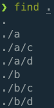
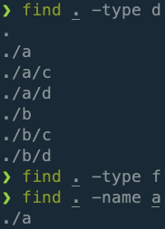
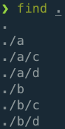
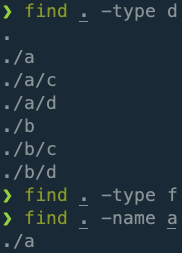

Filesystem 101
Contents
Filesystem 101#
The Unix filesystem is like an upside-down tree with the root directory at the top and leaves terminating branches of nested folders toward the bottom.
The two most well-known filesystem entities are files and folders (directories).
Folders can contain both folders and files.
Files contain neither files nor folders.
If a directory x contains a directory y, then we say that x is y’s parent directory.
We are always in some directory in the filesystem. This directory is called the working directory.
pwd“print the working directory” (this command answers the question, “Where am I in the filesystem now?”)man pwdHow do I use commandpwd?
Absolute Path vs Relative Path
An absolute path (to some entity) is the path (to that entity) relative to the root directory.
A relative path (to some entity) is the path (to that entity) relative to the working directory.
Abbreviations for common directories.
/The root directory.~The home directory...The parent directory..The working directory.
cd “change directory”
cdMove to the home directory.cd ~Move to the home directory.cd -Move to the previous directory.cd ..Move to the parent directory of the working directory.cd .Stay right where we are!man cdHow do I use commandcd?
ls “list”
ls -ailsFList the contents of the working directory. (This command answers the question, “What else is here in the working directory with me?”)ls -ailsF the/relative/path/to/some/directory/xList the contents of directory x.man lsHow do I use commandls?
mkdir “make directory”
mkdir aCreate a new directory called “a” in the working directory.mkdir -p b/cCreate a new directory called “b” in the working directory and create a new directory called “c” in directory “b”.mkdir -pv {a,b}/{c,d}/{e,f}/{g,h}man mkdirHow do I use commandmkdir?
find
Examples
find . -type d -name "b*"Search for directories that begin withb.find . -regex '\.\/\.bash.*'Search for patterns that begin with./.bash/
man findHow do I use commandfind?LearnLinuxTV. (Apr 27, 2021). Linux Essentials - The find command.
One may benefit from working through the following:
LearnLinuxTV. (Mar 9, 2021). Linux Essentials: Navigating the Linux Filesystem.
Example#
 



Terms#
Directory Wiki
Directory Structure Wiki
File Wiki
File Attribute Wiki
File Descriptor Wiki
File Extension Wiki
File Name Wiki
File System Wiki
File Type Wiki
FHS Filesystem Hierarchy Standard Wiki
Glob Wiki
Hidden Resource Wiki
Home Directory Wiki
Path Wiki
Regular Expression Wiki
Resource Wiki
Root Directory Wiki
Text File Wiki
Tree Structure Wiki
Unix Filesystem Wiki
Working Directory Wiki